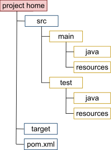
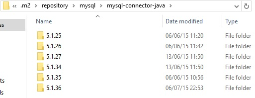

Herramienta escrita en Java para la gestión y construcción de proyectos Java, basado en el concepto de Project Object Model (POM), Maven puede manejar la construcción, reportes, documentación, versionamiento de los proyectos desde un archivo central (pom.xml).
¡Incluso puedes extender las capacidades de Maven mediante plugins!
Glosario
- Dependencia: Libreria de la cual depende tu proyecto
- Artefacto: Un (proyecto) empaquetado (jar, war, ear)
- Plugin: Complemento, añade una función adicional a la herramienta
- Prueba unitaria: Prueba de una unidad de código (método)
Características
Estructura estandar de proyectos
Gestión de dependencias
<dependencies>
<dependency>
<groupId>mysql</groupId>
<artifactId>mysql-connector-java</artifactId>
<version>5.1.36</version>
</dependency>
<dependency>
<groupId>pe.edu.unac</groupId>
<artifactId>utilitario</artifactId>
<version>1.2</version>
</dependency>
</dependencies>
Construcción de proyectos
Versionamiento de artefactos
Uso de Plantillas de proyectos (Arquetipos)
Extendible (Plugins)
<plugin>
<groupId>org.apache.maven.plugins</groupId>
<artifactId>maven-source-plugin</artifactId>
<version>3.0.0</version>
<executions>
<execution>
<id>attach-sources</id>
<phase>package</phase>
<goals>
<goal>jar</goal>
</goals>
</execution>
</executions>
</plugin>
<plugin>
<groupId>org.apache.maven.plugins</groupId>
<artifactId>maven-javadoc-plugin</artifactId>
<version>2.10.3</version>
<executions>
<execution>
<id>attach-javadocs</id>
<phase>package</phase>
<goals>
<goal>jar</goal>
</goals>
</execution>
</executions>
</plugin>
Ciclo de Vida
default
Maneja la construcción y despliegue del proyecto
clean
Maneja la limpieza del proyecto
site
Maneja la creación de la documentación del sitio
Fases
Fases (principales) del ciclo de vida default
- validate - Valida que el proyecto sea correcto
- compile - Compila el código fuente del proyecto
- test - Ejecuta las pruebas unitarias del proyecto
- package - Empaqueta el proyecto, p.e. en un JAR.
- verify - Verifica los resultados de las pruebas de integración
- install - Instala el paquete en el repositorio local, para su uso como dependencia en otros proyectos localmente
- deploy - Copia o despliega el paquete en un repositorio remoto
Las fases del ciclo de vida son secuenciales, esto quiere decir que una fase de orden superior depende de la correcta ejecución de las anteriores. Las fases anteriores a la solicitada se ejecutan automaticamente.
Creación de un proyecto Maven desde Eclipse
Ir al menú File > New > Maven Project , Si no encontramos Maven Project en el menú vamos a Other y lo buscamos
No usaremos arquetipos por el momento, seleccionamos el checkbox que dice: Create a simple project, Clic en Next
Ingresamos un groupId, artifactId, version y packaging, Clic en finish
Si es la primera vez que usamos Maven deberemos contar con conexión a internet para que Maven pueda bajar algunos plugins y/o dependencias que requiere. Luego podremos visualizar nuestro proyecto en la vista Package Explorer
Abrimos el pom.xml y colocaremos algunas configuraciones importantes para todo proyecto, nuestro Xml quedaría así:
<project xmlns="http://maven.apache.org/POM/4.0.0" xmlns:xsi="http://www.w3.org/2001/XMLSchema-instance"
xsi:schemaLocation="http://maven.apache.org/POM/4.0.0 http://maven.apache.org/xsd/maven-4.0.0.xsd">
<modelVersion>4.0.0</modelVersion>
<groupId>com.gustavo</groupId>
<artifactId>mi-primer-proyecto</artifactId>
<version>1.0</version>
<properties>
<maven.compiler.source>1.8</maven.compiler.source>
<maven.compiler.target>1.8</maven.compiler.target>
<project.build.sourceEncoding>UTF-8</project.build.sourceEncoding>
</properties>
</project>
Para que Eclipse reconozca los cambios efectuados en el pom daremos clic derecho en el proyecto > Maven > Update Project..., Seleccionamos el proyecto que deseamos actualizar y damos clic en el botón Ok
Ya con esto tenemos configurado nuestro proyecto Maven con lo básico y podremos empezar a desarrollar nuestros programas Java. Recordemos que podemos ejecutar los comandos de Maven en Eclipse seleccionando el proyecto > Run As y eligiendo la opción que deseemos
System.exit(0);